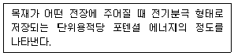
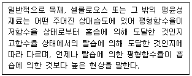
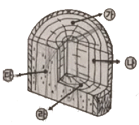
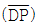
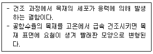
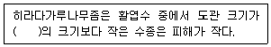

임산가공기사 (2017-08-26 기출문제)
1과목: 목재이학
1. 점탄성모형으로 Kelvin 모형(Voigt 모형)에 대한 설명으로 옳지 않은 것은?
- 스프링과 대시포트를 병렬로 결합한 모형이다.
- 전체에 작용하는 변형율은 스프링의 변형율 및 대시포트의 변형율과 동일하다.
- 일정응력이 작용하여 그 상태를 유지하게 되면 변형율은 시간에 따라 점차 감소한다.
- 전체에 작용하는 응력은 스프링에 작용하는 응력과 대시포트에 작용하는 응력의 합이다.
(정답률: 63%)

2. 다음 설명에 해당하는 용어는?

- 유전율
- 비저항
- 전기전도율
- 유전체역률
(정답률: 78%)
3. 목재의 진비중에 대한 설명으로 옳지 않은 것은?
- 수종에 따라서 다소 차이가 있다.
- 온도가 높아지면 진비중 값도 증가한다.
- 목재의 모든 공극을 완전히 제외한 목재 실질비중을 의미한다.
- 진비중을 측정하기 위하여 사용되는 치환매체에는 물, 벤젠, 헬륨 등이 있다.
(정답률: 60%)
4. 생재의 수분이 증발하기 시작하여 대기의 온도 및 습도와 평형상태에 있을 때의 비중은?
- 건조비중
- 전건비중
- 평형비중
- 기건비중
(정답률: 80%)
5. 공극률에 대한 설명으로 옳은 것은?
- 공극의 용적비율이다.
- 목재실질의 용적비율이다.
- 밀도가 높으면 공극률이 높아진다.
- 섬유포화점 이하에서는 목재의 용적변화는 없지만 공극은 자유수로 충만되어 감소하게 된다.
(정답률: 79%)
6. 목재의 열팽창에 대한 설명으로 옳지 않은 것은?
- 목재 함수율의 영향을 받는다.
- 온도 변화에 따라 급격히 변화한다.
- 횡단방향이 섬유방향보다 열팽창이 크다.
- 열에 의한 목재의 치수변동은 변동 전 치수에 비례한다.
(정답률: 62%)
7. 목재의 수축과 팽윤이 가장 큰 방향은?
- 방사방향
- 목리방향
- 섬유방향
- 접선방향
(정답률: 69%)
8. 생재비중이 0.65인 목재의 최저함수율은?
- 약 35%
- 약 46%
- 약 54%
- 약 65%
(정답률: 56%)
9. 목재의 평형함수율에 대한 설명으로 옳지 않은 것은?
- 기건함수율은 일종의 평형함수율이다.
- 평형함수율은 목재 수종에 따라 크게 다르지 않다.
- 평형함수율은 공기 중의 온도와 풍속에 의해 결정된다.
- 대기 중에 방치된 목재는 어느 정도 시간이 지나면 수분평형상태에 이르게 된다.
(정답률: 68%)
10. 목재가 함유하는 수분으로 세포내강이나 세포간극 등의 공극에 액상으로 존재하는 것은?
- 흡착수
- 자유수
- 화학수
- 결합수
(정답률: 82%)
11. 목재의 수축 및 팽윤과 관련되어 발생하는 현상으로 가장 거리가 먼 것은?
- 할렬
- 비틀림
- 건조응력
- 응력완화
(정답률: 85%)
12. 일정한 크기의 하중을 가한 다음 하중을 제거했을 때 원래 상태로 돌아가지 않는 변형은?
- 탄성변형
- 소성변형
- 지연탄성변형
- 순간탄성변형
(정답률: 75%)
13. 섬유방향 탄성계수에 대한 설명으로 옳은 것은?
- 비중이 클수록 탄성계수는 커진다.
- 함수율이 클수록 탄성계수는 커진다.
- 마이크로피브릴 경사각이 클수록 탄성계수는 커진다.
- 셀룰로오스 결정화도가 클수록 클수록 탄성계수는 작아진다.
(정답률: 45%)
14. 거문고, 가야금의 표판 부위에 주로 사용되며 비중에 비하여 탄성계수가 높은 수종은?
- 흑단
- 회양목
- 대나무
- 오동나무
(정답률: 78%)
15. 방사방향의 전팽윤율이 12%인 목재의 방사방향 전수축율은?
- 8.09%
- 10.71%
- 11.24%
- 13.63%
(정답률: 63%)
16. 다음 설명에 해당하는 용어는?

- 이력현상
- 기건현상
- 동적 평형현상
- 정적 평형현상
(정답률: 81%)
17. 목재의 수축과 팽윤의 영향인자로 볼 수 없는 것은?
- 목재비중
- 목리방향
- 탄성계수
- 건조속도
(정답률: 74%)
18. 목재의 열전도율을 계산하는데 가장 관련이 없는 것은?
- 목재의 무게
- 전도되는 시간
- 전도되는 열량
- 열이 통과하는 길이
(정답률: 72%)
19. 섬유경사각에 가장 많은 영향을 받는 목재의 강도는?
- 휨강도
- 압축강도
- 인장강도
- 전단강도
(정답률: 53%)
20. 전건비중이 1.0이고 진비중이 1.5인 목재의 실질율은?
- 0.22
- 0.33
- 0.44
- 0.66
(정답률: 66%)
2과목: 목재해부학
21. 활엽수재에서 관찰하기 가장 어려운 세포는?
- 가도관
- 방사가도관
- 방사유세포
- 축방향유조직
(정답률: 58%)
22. 고무구에 대한 설명으로 옳은 것은?
- 온대산 수종에 특히 많다.
- 침엽수재에서만 형성된다.
- 침엽수와 활엽수에서 모두 관찰된다.
- 활엽수 특정 수종의 목재에 형성된다.
(정답률: 57%)
23. 주로 정상적인 소나무류에서만 관찰되는 것은?
- 상해수지구
- 방사유세포 내의 인텐쳐
- 가도관 내벽의 나선비후
- 방사가도관의 거치상비후
(정답률: 46%)
24. 방사공재 수종에 해당하는 것은?
- 잣나무
- 가시나무
- 굴참나무
- 느티나무
(정답률: 31%)
25. 활엽수재의 목섬유에 대한 설명으로 옳지 않은 것은?
- 수목의 지지 역할을 한다.
- 목재비중에 영향을 주지 않는다.
- 섬유상가도관과 진정목섬유로 구성되어 있다.
- 진정목섬유란 가늘고 긴 세포로 작은 단벽공을 갖는다.
(정답률: 66%)
26. 침엽수재의 가도관벽에 벽공 배열이 대상형으로 배열되어 주위에 세포간 물질이 집적하여 눈썹모양의 비후부가 발생된 것은?
- 크라슐래
- 나선비후
- 수지가도관
- 트라베큘라
(정답률: 65%)
27. 활엽수재와 침엽수재를 육안적으로 식별하기 위한 방법으로 옳지 않은 것은?
- 활엽수재에서 방사조직은 거의 볼 수 없다.
- 도관이 있는 활엽수재는 도관이 없는 침엽수재와 구별된다.
- 일부 침엽수재의 횡단면에서는 수직수지구가 육안으로 관찰된다.
- 활엽수재는 구성세포의 종류가 다양하므로 침엽수재에 비하여 재면상태가 더 복잡하다.
(정답률: 54%)
28. 벽공구의 폭이 벽공연의 폭보다 넓은 분야벽공은?
- 삼나무형벽공
- 소나무형벽공
- 측백나무형벽공
- 가문비나무형벽공
(정답률: 34%)
29. 타일로시스(tylosis)와 타일로소이드(tylosoid)의 차이점은?
- 목부와 사부
- 심재와 변재
- 피층과 재부
- 활엽수와 침엽수
(정답률: 72%)
30. 수종식별을 위하여 세포관찰을 한 결과 젤라틴 섬유가 확인되었다면 어떤 수종인가?
- 침엽수재이다.
- 콩과 수종이다.
- 수종은 알 수 없다.
- 버드나무과 수종이다.
(정답률: 54%)
31. 압축응력제에 대한 설명으로 옳은 것은?
- 가도관의 길이는 정상재보다 10% 정도 길다.
- 만재로의 이행이 급하게 진전되어 조재와 만재의 구별이 확실하다.
- 수종에 따라서는 세포간극이 리그닌이나 팩틴으로 충만되어 있을 수 있다.
- 활엽수재에 있어서 경사진 가지나 수간의 횡단면 하부에 주로 발달되는 변형재이다.
(정답률: 58%)
32. 다음 그림에서 접선단면은?

- ㉮
- ㉯
- ㉰
- ㉱
(정답률: 60%)
33. 집합방사조직이 주로 관찰되는 수종은?
- 오리나무
- 구상나무
- 갈참나무
- 물푸레나무
(정답률: 47%)
34. 나선비후를 관찰하기 가장 어려운 수종은?
- 주목
- 미송
- 소나무
- 비자나무
(정답률: 48%)
35. 침엽수재 조직에서 관찰할 수 없는 것은?
- 목섬유
- 가도관
- 방사조직
- 정상수지구
(정답률: 60%)
36. 접선단면에서 측정할 수 없는 것은
- 도관의 길이
- 섬유의 길이
- 방사조직의 길이
- 방사조직의 높이
(정답률: 53%)
37. 활엽수재 도관 내강의 일부 또는 전부를 폐쇄하고 있는 구조물의 특성을 이용하여 물통이나 술통으로 쓰이는데 가장 적당한 목재는?
- 재면의 무늬가 아름다운 목재
- 송지를 많이 함유하고 있는 목재
- 재면의 목리가 나선목리로 되어있는 목재
- 도관 내 타일로시스를 많이 함유하고 있는 목재
(정답률: 68%)
38. 마이크로피브릴의 배열이 섬유축과 가장 평행한 것은?
- 1차벽
- 2차벽 중층
- 2차벽 내층
- 2차벽 외층
(정답률: 69%)
39. 열대산 목재의 특징으로 볼 수 없는 것은?
- 대부분 산공재이다.
- 교착목리가 대부분 없다.
- 연륜이 거의 나타나지 않는다.
- 실리카를 함유하는 수종이 존재한다.
(정답률: 67%)
40. 리플마크에 대한 설명으로 옳은 것은?
- 침엽수재에서 쉽게 관찰할 수 있다.
- 도관내강이 충저물질로 채워져 있는 상태를 나타낸다.
- 활엽수재에서는 참나무류를 제외하고는 관찰하기 어렵다.
- 방사조직이나 축방향세포가 접선단면에서 층계상을 나타낸다.
(정답률: 70%)
3과목: 목재화학
41. 셀룰로오스의 분자량 측정법이 아닌 것은?
- 광산란법
- 보수도 측정법
- 초원심법
- 점도 측정법
(정답률: 77%)
42. 셀룰로오스 b축의 길이가 10.3A이고,

가 10,000인 셀룰로오스의 실제길이는 얼마인가?- 3.15×10-6m
- 3.15×10-9m
- 5.15×10-6m
- 5.15×10-9m
(정답률: 63%)
43. 다음 중 리그닌의 화학적 기본구조를 나타낸 것은?
- C6 - C1
- C6 - C2
- C6 - C3
- C6 - C4
(정답률: 75%)
44. 다음 리그닌에 대한 설명 중 틀린 것은?
- 활엽수재에는 약 20~28%가 함유되어 있다.
- 침엽수재에는 약 26~32%가 함유되어 있다.
- 페닐프로판 구조를 주축으로 하는 고분자 물질이다.
- 72% 황산용액으로 목재를 가수분해시켜 얻은 것을 티오리그닌이라 한다.
(정답률: 82%)
45. 셀룰로오스 화학구조와 관계가 없는 것은?
- 방향족 화합물
- 글루코시드 결합
- 환원성 말단기
- 비환원성 말단기
(정답률: 67%)
46. 셀룰로오스 유도체의 용도로 가장 거리가 먼 것은?
- 도료
- 화약
- 필터
- 라텍스
(정답률: 57%)
47. 침엽수 리그닌을 구성하고 있는 대표적인 기본 단위 구조는?
- Syringylpropane
- P-hydroxypropane
- Guaiacylpropane
- Benzylpropane
(정답률: 69%)
48. 목재의 함수율을 측정하고자 한다. 다음 중 가장 간단하여 널리 채용되고 있는 방법은?
- 증류법
- 건조법
- 적정법
- 추출법
(정답률: 79%)
49. 셀룰로오스의 결정구조에 대한 설명으로 옳은 것은?
- 셀룰로오스의 결정성은 분자의 강직성과 수산기 사이의 공유결합에 의존한다
- 셀룰로오스 분자는 모두 결정성을 나타내며 규칙적으로 배열되어 있다.
- 엘리멘터리 피브릴(elementary fibril)의 폭은 천연 셀룰로오스와 재생 셀룰로오스가 서로 다르다.
- 셀룰로오스 레이온, 큐피리암모니움 레이온, 셀로판 등은 모두 셀룰로오스 Ⅱ에 속한다.
(정답률: 56%)
50. 다음 중 수목의 심재(heartwood)화 현상과 관계가 없는 것은?
- 유세포의 죽음
- 추출 성분의 감소
- 전분의 소실
- 효소 활성의 일시적 증가
(정답률: 70%)
51. 셀룰로오스의 기본구성 단위인 셀로비오스(cellobiose)에는 몇 개의 수산기가 존재하는가?
- 1
- 4
- 6
- 8
(정답률: 74%)
52. 셀룰로오스의 구조 및 성질에 대한 설명이다. 가장 관계가 없는 것은?
- 양말단기를 제하고는 글루코오스 단위당 3개의 수산기가 있다.
- 글루코오스의 1과 4번 탄소의 수산기가 탈수 축합된 구조이다.
- 용해용 용매로는 다이옥산(Dioxane)이 이용된다.
- 목재 셀룰로오스의 평균 중합도는 면 셀룰로오스의 평균 중합도보다 낮다.
(정답률: 62%)
53. 셀룰로오스의 결정형에는 Ⅰ, Ⅱ, Ⅲ, Ⅳ의 4종류가 있다. 다음 중 셀룰로오스 Ⅰ은 무엇인가?
- 재생 셀룰로오스
- 암모니아 셀룰로오스
- 헤미 셀룰로오스
- 천연 셀룰로오스
(정답률: 77%)
54. 목재 세포벽 중 리그닌의 함량이 가장 많은 층은?
- S1 층
- S2 층
- S3 층
- 세포간층
(정답률: 66%)
55. 셀룰로오스 유도체 중 알칼리 셀룰로우스를 모노클로로아세트산(monochloroacetic acid)에 침적시킨 후 NaOH를 첨가하여 얻을 수 있으며 의약, 화장품 및 식품의 유화 안정제 등으로 이용되는 것은?
- Methyl cellulose
- Carboxymethyl cellulose
- Ethyl cellulose
- Hydroxyethyl cellulose
(정답률: 78%)
56. 목재로부터 헤미셀룰로오스를 단리하기 위하여 리그닌을 제거하고자 한다. 다음 중 적합한 방법이 아닌 것은?
- 황산법
- 아염소산염법
- 과초산법
- 염소·모노에탄올아민법
(정답률: 62%)
57. 다음 중 침엽수재의 헤미셀룰로오스를 구성하는 성분으로 가장 많은 것은?
- Glucuronoxylan
- Arabinoglucuronoxglan
- Glucomannan
- Arabinogalactan
(정답률: 72%)
58. 인장 이상재의 리그닌 함량에 관하여 기술한 것으로 가장 옳은 것은?
- 정상재의 리그닌 함량보다 높다.
- 정상재의 리그닌 함량보다 낮다.
- 정상재의 리그닌 함량과 같다.
- 리그닌 함량과는 관계 없다.
(정답률: 59%)
59. 셀룰로오스를 가수분해하였을 때 얻어지는 glucose 중량의 이론치는?
- 77%
- 88%
- 111%
- 144%
(정답률: 79%)
60. 셀룰로오스의 알칼리 분해 반응 중 peeling off 반응은 어떤 기구로 반응하는가?
- 셀룰로오스 분자가 알칼리에 의하여 무질서하게 분해된다.
- 셀룰로오스의 환원성말단기부터 하나씩 분해된다.
- 셀룰로오스의 비환원성말단기부터 하나씩 분해된다.
- 글루코오스 분자로 무질서하게 분해된다.
(정답률: 68%)
4과목: 임산제조학
61. 다음 설명에 해당하는 용어는?

- 뒤틀림
- 표면할열
- 쯔그러짐
- 다이아몬딩
(정답률: 50%)
62. 고해 시간이 길어짐에 따라 종이의 물리적 성질의 변화로 옳지 않은 것은?
- 지질이 치밀해진다.
- 인장강도는 증가한다.
- 파열강도는 증가한다.
- 인열강도는 증가한다.
(정답률: 65%)
63. 파티클보드용 파티클을 제조하기 위한 기기로 가장 적합한 것은?
- Disk refiner
- Drum barker
- Hammer mill
- Wood grinder
(정답률: 60%)
64. 제지과정에서 사용되는 첨가제에서 전기이중층에 대한 설명으로 옳지 않은 것은?
- 고정층과 확산층을 합하여 전기이중층이라고 한다.
- 입자와 거리가 가까울수록 대이온의 수는 감소하지만 코이온의 수는 증가한다.
- 표면전하를 띤 입자가 이온이 함유되어 있는 물속에 존재하면 입자 주변의 이온분포가 변화된다.
- 입자 표면에 매우 가깝게 위치한 대이온은 강한 정전기적 인력에 의하여 그 입자의 표면에 확고하게 결합된다.
(정답률: 68%)
65. 합판을 제조함으로 가장 크게 개선되는 목재의 물리적 성질은?
- 비중
- 흡습성
- 평형함수율
- 수축과 팽윤의 이방성
(정답률: 59%)
66. 제지공정 중 고해작업에 대한 설명으로 옳지 않은 것은?
- 섬유의 유연성을 부과한다.
- 피브릴화할 때에는 선상 고해라고 한다.
- 섬유를 절단하는 것은 유리상 고해라고 한다.
- 물과 혼합아여 고해기에 의해 기계적으로 처리한다.
(정답률: 52%)
67. 띠톱의 구성 요소가 아닌 것은?
- 거차
- 플랜지
- 송재차
- 긴장장치
(정답률: 67%)
68. 합성수지 접착제로 열가소성 수지(A)와 열경화성 수지(B)의 종류가 잘못 나열한 것은?
- A : 아크릴수지, B : 멜라민수지
- A : 초산비닐수지, B : 페놀수지
- A : 염화비닐수지, B : 에폭시수지
- A : 요소수지, B : 폴리아미드수지
(정답률: 55%)
69. 촉진 천연건조에 대한 설명으로 옳지 않은 것은?
- 생재에서 5% 정도까지 건조한다.
- 송풍 및 태양열 건조장치 등을 이용한다.
- 강우가 장시간 계속되는 경우에 유리하다.
- 장치 설계나 조작을 잘못할 경우 변색이 발생하기 쉽다.
(정답률: 48%)
70. 용해용 펄프에 해당되는 것은?
- 기계펄프
- 레이온펄프
- 크라프트펄프
- 에스파르토펄프
(정답률: 44%)
71. 목재의 제재방법에서 접선단면 제재법에 대한 설명으로 옳지 않은 것은?
- 정목판을 얻을 수 있다.
- 경단면 제재법에 비하여 제재가 수월하다.
- 경단면 제재법에 비하여 품질이 떨어진다.
- 나이테에 접선방향 또는 방사방향이 직각이 되도록 제재하는 방법이다.
(정답률: 40%)
72. 화학펄프와 비교한 반화학펄프에 대한 설명으로 옳지 않은 것은?
- 표백이 가능하다.
- 약품 소비량이 적다.
- 침엽수 칩을 주로 사용한다.
- 화학펄프에 비해 수율이 높다.
(정답률: 56%)
73. 정유의 대취방법이 아닌 것은?
- 여과법
- 추출법
- 흡수법
- 수증기 증류법
(정답률: 47%)
74. 목재의 열분해 생성물 중 리그닌으로부터 얻어지는 성분은?
- 유기산 화합물
- Phenoi 화합물
- Alcohol 화합물
- Pyridine 화합물
(정답률: 56%)
75. 아황산펄프 중해액에서 리그닌 및 유기물과 결합하는 등 펄프화 과정에서 가장 중요한 역할을 하는 것은?
- 칼슘 이온
- 수소 이온
- 무수황산 이온
- 중아황산 이온
(정답률: 50%)
76. 초지기의 금망에 대한 설명으로 옳지 않은 것은?
- 60~75 mesh가 사용된다.
- 유연성과 인장강도가 높아야 한다
- 값이 비싼 대신 사용수명이 1~2년으로 길다.
- 아연이나 주석이 함유되어 있는 구리합금이 사용된다.
(정답률: 61%)
77. 엘멘돌프 인열강도 시험기로 동일한 시험편 5매를 겹쳐 측정한 결과 지침의 평균치가 550mN 일 때 인열강도는?
- 1240 mN
- 1550 mN
- 1560 mN
- 1760 mN
(정답률: 52%)
78. 20×20cm의 합판을 만들기 위해 게이지 압력을 32kgf/cm2으로 압체하였다. 이때 합판의 단위 면적당 압체 압력은? (단, 압체기 실린더 지름은 20cm, π는 3.14임)
- 0.251kgf/cm2
- 2.51kgf/cm2
- 25.12kgf/cm2
- 251.2kgf/cm2
(정답률: 52%)
79. 착색(stain)에 대한 설명으로 옳지 않은 것은?
- 생지 착색은 목재의 불투명성을 강조하기 위한 방법이다.
- 생지 착색은 염료를 사용하여 목재의 생지를 염색하는 방법이다.
- 목재 표면에 색을 부여하여 목재의 무늬를 강조하기 위한 공정이다.
- 도막 착색은 유색 착색제를 사용하여 피막을 만들어 착색하는 방법이다.
(정답률: 55%)
80. 목재의 치수안정화 처리 방법이 아닌 것은?
- 수직적층
- 피복처리
- 가교결합
- 용적처리
(정답률: 46%)
5과목: 목재보존학
81. 히라다가나무좀에 대한 설명으로 옳지 않은 것은?
- 심재보다는 변재를 주로 침해한다.
- 활엽수보다는 침엽수에 주로 발생한다.
- 전분량이 많은 나무일수록 피해를 많이 준다.
- 함수율이 30% 이하인 건조재를 주로 가해 한다.
(정답률: 52%)
82. 목재 처리법 중 확산법에 대한 설명으로 옳지 않은 것은?
- 처리시간이 짧다.
- 심재처리도 가능하다.
- 특별한 장치가 필요 없다.
- 고함수율 목재의 처리가 가능하다.
(정답률: 57%)
83. 생재무게 2kg인 목재의 1.5kg이고 부후 후 전건중량이 1.2kg일 때에 중량 감소율은?
- 2%
- 5%
- 15%
- 20%
(정답률: 58%)
84. 가루나무좀 및 흰개미 등의 방충제로 쓰이는 약재로 목재에 확산주입하여 사용하는 것은?
- 타르계 화합물
- 붕소계 화합물
- 불소계 화합물
- 유기석계 화합물
(정답률: 66%)
85. 목재 방충제의 살충 작용 기작에 해당하지 않는 것은?
- 접촉독제
- 마취독제
- 호흡독제
- 소화중독제
(정답률: 52%)
86. 기상열화에 대한 설명으로 옳은 것은?
- 환경오염 물질인 산성비와 무관하다.
- 태양광선 중에서 자외선은 목재 표면 광열화의 주된 인자이다.
- 재색의 변화는 셀룰로오스의 광열화 결과로 발색단이 생성되기 때문이다.
- 화학적, 물리적, 광 에너지의 복합적인 영향에 의해 진행되나 목재 조직은 변하지 않는다.
(정답률: 62%)
87. 수용성 방부제가 아닌 것은?
- A-1
- ACQ-1
- CUAZ-2
- CuHDO-3
(정답률: 46%)
88. 다음 괄호 안에 알맞은 용어는?

- 알
- 유충
- 성충
- 번데기
(정답률: 59%)
89. 목재의 연소에 대한 설명으로 옳은 것은?
- 열분해는 초기에 정도가 심하다.
- 목재의 연소에는 착화가 착염보다 먼저 일어난다.
- 공기 중에서 가열하면 180℃ 정도에서 분해가 시작된다.
- 목재 조성분의 열분해에 있어서 리그닌이 가장 먼저 분해되기 시작한다.
(정답률: 48%)
90. 표면오염균에 의한 생물학적 목재변색에 대한 설명으로 옳지 않은 것은?
- 건조한 침엽수 목재에서 자주 발생한다.
- 대표적으로 Aspergillus속, Penicillium속이 있다.
- 균사는 주로 목재 표면에서 대량으로 포자를 만든다.
- 오염된 침엽수재는 목재표면을 솔질이나 대패질을 하면 대부분 제거된다.
(정답률: 61%)
91. 방부처리 방법 중 가압처리법에 대한 설명으로 옳지 않은 것은?
- 살균처리 효과도 있다.
- 현장처리가 불가능하다.
- 방부제가 깊고 균일하게 침투한다.
- 방부제 흡수량이 적어 경제적이다.
(정답률: 60%)
92. 단일 화합물로 구성된 목재 난연제가 아닌 것은?
- 미날리스
- 탄산나트륨
- 인산제일암모늄
- 인산제이암모늄
(정답률: 60%)
93. 목재의 사용환경 범주 중 H3에 대한 설명으로 옳은 것은?
- 건조한 실내 환경에 적용한다.
- 토양 또는 담수와 직접 접하는 환경에 적용한다.
- 토양 또는 담수에 접촉하지 않으나 비와 눈에 노출되는 환경에 적용한다.
- 비와 눈을 직접 맞지는 않으나 결로 우려가 있는 실내 환경에 적용한다.
(정답률: 65%)
94. 목재의 연부후에 대한 설명으로 옳지 않은 것은?
- 고함수율의 목재도 피해를 입을 수 있다.
- 연부후균이 분비하는 효소에 의해 세포벽이 파괴된다.
- 일반적으로 목재의 내부에서 외부로 부후가 진행한다.
- 세포내강에 침입한 균사는 2차벽의 중층에 침입하여 공동(cavity)을 만들어 파괴한다.
(정답률: 60%)
95. 목재를 방부처리하기 전에 적정함수율은? (단, 확산법으로 처리할 목재를 제외함)
- 10% 미만
- 30% 이하
- 50% 전후
- 80% 이상
(정답률: 64%)
96. 표면오염균이나 변재변색균이 심재를 침해하지 못하는 주요 이유는?
- 심재에는 독성물질이 존재하기 때문에
- 심재의 비중이 변재에 비하여 높기 때문에
- 심재의 함수율이 변재에 비해 낮기 때문에
- 심재의 유세포에는 영양원이 존재하기 않기 때문에
(정답률: 70%)
97. 목재의 특징으로 옳지 않은 것은?
- 재생 가능한 생물자원이다.
- 인간에게 친근감을 주는 소재이다.
- 다른 재료에 비해 중량대비 상대적 강도가 낮다.
- 수분환경에 노출되면 수축 또는 팽윤이 되어 치수가 변한다.
(정답률: 69%)
98. 목재를 화약약품에 침적처리하여 가소성을 부여할 수 없는 것은?
- 요소
- 티오페놀
- 디페닐아민
- 아비에트산
(정답률: 43%)
99. 방부제의 흡수량을 적게 하기 위하여 1단계에서 공기를 가압하는 처리법은?
- 참지법
- 셀론법
- 층세포법
- 공세포법
(정답률: 54%)
100. 인체에 해가 가장 적은 방충제는?
- BHC
- 클로로덴
- 피레스로이드
- 메틸브로마이드
(정답률: 44%)